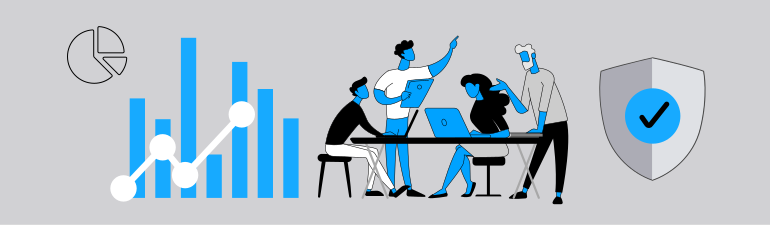

Convenience vs Privacy
One of the biggest ideas in this topic is balance. Cookies can improve convenience, but they can also reduce privacy when used in aggressive or unclear ways.
Understanding how modern websites collect, store, and use user data
The following concepts help explain the role of cookies and privacy in web development. They are important because they connect user experience, tracking, and responsible design.
Understanding these ideas makes it easier to see how websites balance convenience with privacy. While some features improve usability, others involve collecting and storing user data, which requires careful handling.
These concepts also help show the responsibilities developers have when designing systems that interact with user information.

| Concept | Definition | Why It Matters |
|---|---|---|
| Cookie | A small file of data stored in the browser by a website. | Helps websites remember users and settings. |
| Session ID | A value used to identify a user during a browsing session. | Supports logins and user activity while visiting a site. |
| Third-Party Tracking | Tracking done by outside services connected to a website. | Raises privacy concerns because it can follow users across sites. |
| Consent Banner | A notice asking users to accept or manage cookie settings. | Helps inform users and collect permission. |
| Privacy Policy | A page explaining how a website collects and uses data. | Improves transparency and user awareness. |
| Data Collection | The process of gathering information about users or activity. | Affects analytics, personalization, and privacy risk. |
| User Preferences | Saved settings such as language, theme, or region. | Makes websites more convenient and personalized. |
One of the biggest ideas in this topic is balance. Cookies can improve convenience, but they can also reduce privacy when used in aggressive or unclear ways.
Users should know what is happening with their data. A good site should explain cookie use clearly instead of hiding important details in complicated language.